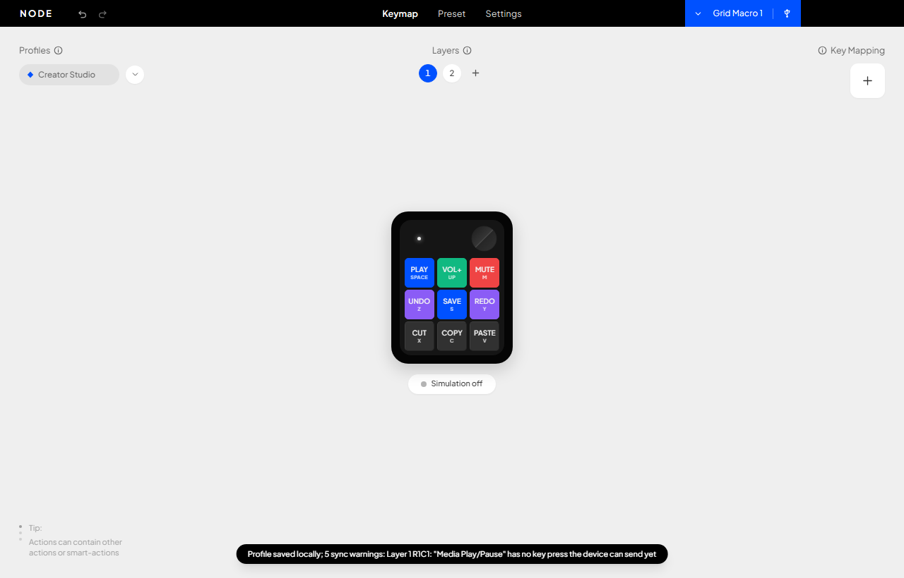
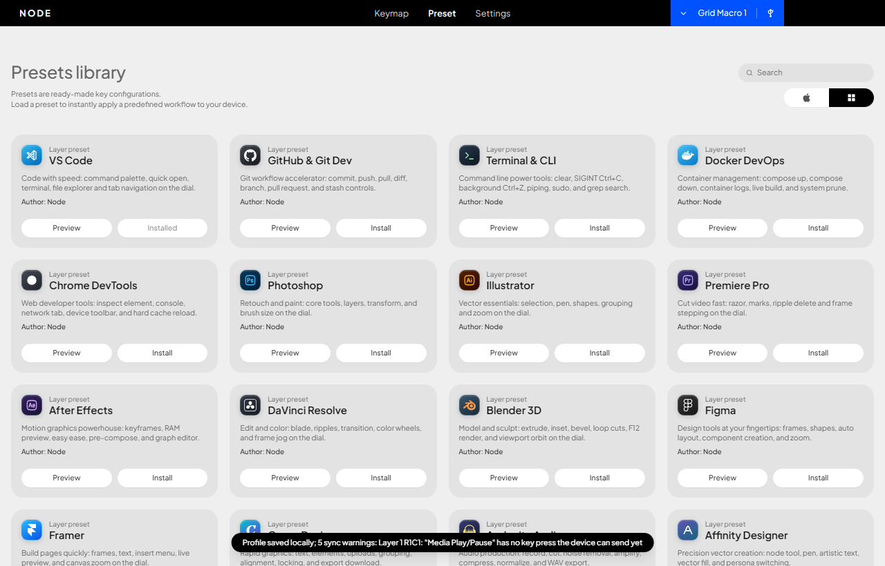
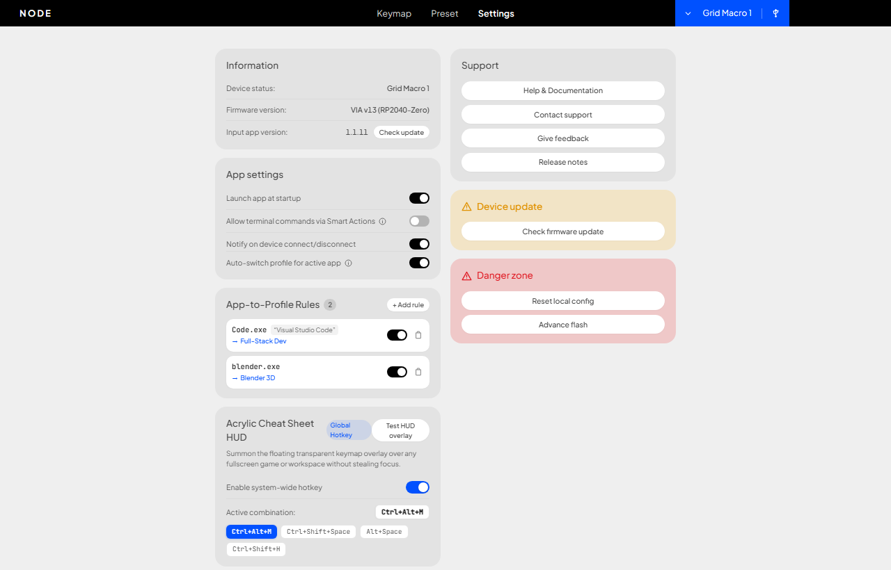
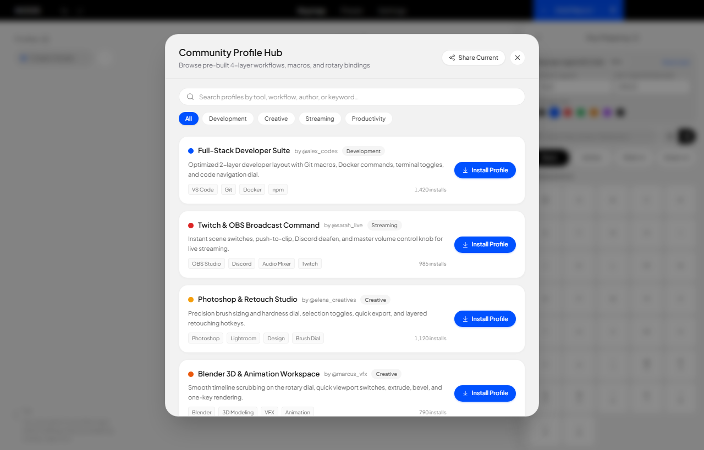

A comprehensive visual guide to NODE studio and the Grid Macro 1 macropad. Explore how the hardware talks to the software, compare what we had originally against our new modern feature suite, and master all 10 advanced tools with authentic software previews.
Hardware Communication
How the Hardware & Software Work Together
The Grid Macro 1 macropad is built around the Raspberry Pi RP2040-Zero microcontroller running custom QMK firmware with the VIA v13 protocol. Rather than requiring external driver installations, NODE studio communicates directly with the controller through standard WebHID channels over USB.

Figure 1: Main Studio View — Real-time connection badge, 3×3 matrix, rotary dial, 4 hardware layers, and profile selector.
NODE studio v1.1.11
When you plug the macropad into your computer via USB-C:
Hardware Enumeration: The RP2040-Zero presents two HID interfaces to Windows: Interface 0 is standard consumer HID keyboard/mouse for instant input transmission with zero OS latency; Interface 1 is a vendor-defined Raw HID interface (Vendor ID 0xFEED, Product ID 0x6001).
Cryptographic & Protocol Handshake: When NODE studio opens the WebHID channel, it issues a 32-byte VIA_GET_PROTOCOL_VERSION request. The controller answers with protocol version 0x000D (VIA v13), verifying firmware compatibility.
Live EEPROM/Flash Readout: Studio reads all 4 hardware layers (Layer 0 through 3) into local memory, decoding 16-bit QMK keycodes and displaying them instantly on the interactive 3×3 canvas.
Instant Atomic Writes: When you change a key binding, Studio creates an atomic safety backup before transmitting VIA_SET_KEYCODE over Raw HID. The RP2040 commits the change directly to non-volatile flash storage—your keys remain mapped forever even if you plug the pad into another computer without software installed.
The macropad provides 9 mechanical switch sockets and an EC11 rotary encoder, all connected to GPIO pins on the RP2040-Zero:
Matrix Rows & Columns: The 9 keys are organized in a diode-isolated matrix across GPIO 0, 1, 2 (rows) and GPIO 3, 4, 5 (columns), scanned continuously at 1000Hz polling rate for true N-Key Rollover (NKRO) without ghosting.
Rotary Encoder (EC11): The encoder connects via GP9 (Channel A) and GP10 (Channel B) for quadrature pulse decoding (Clockwise / Counter-Clockwise turns), while the integrated tactile push switch is wired to GP11.
4 Hardware Layers: The firmware maintains 4 distinct layer buffers in flash memory. A single key or encoder action can perform different tasks depending on whether Layer 0 (Base), Layer 1 (Media), Layer 2 (Code), or Layer 3 (Game) is active.
Dynamic Layer Switching: Studio allows assigning TO(n) (switch to layer), MO(n) (momentary layer shift while held), or TG(n) (toggle layer) to any physical switch or rotary gesture.
Evolution Breakdown
What Did the Software Have Originally vs. Everything We Built
The project started as a rudimentary single-page key mapper. Below is a complete side-by-side comparison of the original baseline capabilities versus the modern production-grade studio environment.
System Area
Original Baseline
Modern NODE Studio (All New Features)
Visualizer & Feedback
Static HTML buttons, no input detection
Real-time Live Keypress Visualizer with pulse animation, WebHID readouts, and latency monitor
Multi-category Presets Library with instant OS Switcher (Windows / macOS / Linux modifier mapping)
Profile Management
Single default profile only
Unlimited custom profiles with tag metadata, clone, export/import JSON, and active window synchronization
App Switching Automation
None; manual profile switching only
Background Win32 tracker with Custom App-to-Profile Rules Editor (process name + window title matching)
Community Sharing
None; isolated local settings
Community Profile Sharing Hub with category filtering, search, live previews, and 1-click import
Action Engine & Gestures
Single keycode tap only
Multi-action drawer: Single Tap, Double-Tap, Long-Press Hold, app launching, text paste, URL shortcuts
In-Game / In-App Overlay
None
Click-through Acrylic Cheat Sheet HUD overlay showing active layer bindings without stealing focus
RGB Lighting Matrix
Uncontrolled or static hardware default
Interactive HSV color picker, speed/brightness controls, lighting effects, and per-layer color profiles
Reliability & Safety
Direct overwrite without backup or dry-run
Automatic pre-write EEPROM snapshots, revert history, and full keyboard Simulation Mode
Desktop Integration
Browser only, no automatic updates
Signed Windows Electron desktop app with GitHub Releases background auto-updater and system tray
Feature 1
1. Live Key Visualizer & Hardware Input Monitor
The Live Key Visualizer bridges the physical macropad and the on-screen studio. When you press any key or twist the rotary dial on your physical desk, the corresponding switch lights up on the virtual canvas within milliseconds.
Sub-Millisecond Reflection: Studio hooks into incoming HID reports to immediately reflect physical presses with a reactive glowing ring and subtle 3D mechanical depression animation.
Hardware Keycode & Modifier Readout: Shows the exact QMK scan-code being triggered, verifying that your hotkey modifiers (e.g. Ctrl, Alt, Shift, GUI) are transmitting cleanly.
Rotary Quadrature Indicator: Clockwise and counter-clockwise detent clicks trigger directional pulse animations on the virtual dial ring, confirming encoder health.
Feature 2
2. Keycap Legend Personalization & Color Accents
Keycap customization allows you to make your digital macropad an exact visual replica of your desk setup or tailor labels to complex multi-step workflows.
Primary Custom Legend: Replace cryptic abbreviations like C(S(T)) with human-readable text like REOPEN TAB or MUTE MIC.
Sub-Legend (Subscript): Add a secondary label to the bottom corner of the key tile, perfect for noting secondary layer behavior, shortcut notes (e.g. F13 or HOLD: ZOOM), or app contexts.
7-Swatch Aesthetic Color Palette: Select from Graphite, Crimson Red, Royal Blue, Forest Green, Amber Gold, Deep Purple, or Mint Teal to color-code functional groups across your 3×3 matrix.
Full Profile Persistence: Custom legends and accent colors are seamlessly saved into profile JSON files and restored whenever you switch profiles.
Feature 3
3. Presets Library with Dynamic OS Switcher
Jumpstart your workflow in seconds using curated, expert-crafted templates for industry-standard software.

Figure 3: Presets Library View — Curated workflow templates with instantaneous Windows / macOS / Linux modifier translation.
Presets Catalog
Curated Workflows: Ready-to-use layouts for Adobe Photoshop (Brush, Zoom, Layers), Visual Studio Code (Format, Terminal, Command Palette), Premiere Pro (Razor, Ripple Delete, Jog Wheel), Blender, Streaming, and Discord.
Instant OS Switcher: A dedicated operating system toggle automatically adapts shortcuts between Windows (Ctrl/Alt), macOS (Cmd/Option), and Linux environments.
Layered Integration: Presets populate all 4 layers with complementary actions, including rotary dial jog and scrub behaviors.
Feature 4
4. Auto Active Window Profile Switching & Rules Editor
Forget manually changing profiles when you multitask. The desktop tracker detects which application currently owns the operating system foreground focus and switches macropad layers automatically.

Figure 4: Settings & Rules Editor — Active window background tracking with custom process and window title priority rules.
Settings Manager
Native Foreground Polling: Electron's Win32 helper monitors window activation events using low-overhead native system calls.
App-to-Profile Rules Manager: Define custom rules specifying exact process executable names (e.g. photoshop.exe, Code.exe, obs64.exe) or window title patterns.
Priority Matching: Rules evaluate in strict user-configured priority order. If you switch from Chrome to VS Code, your coding layer activates instantly without a single manual click.
Safe Fallback: If no custom rule matches the current foreground window, the pad smoothly reverts to your designated default profile.
Feature 5
5. Community Profile Sharing Hub
Discover, share, and install macropad layouts created by developers, digital artists, audio engineers, and gamers worldwide.

Figure 5: Community Sharing Hub — Explore verified community profiles, inspect keymaps, and import with one click.
Community Hub
Category Filtering: Browse through dedicated categories including Productivity, Creative & Design, Development, Media & Audio, and Gaming.
Interactive Keymap Previews: Inspect key assignments, custom legends, and rotary functions before importing.
1-Click Non-Destructive Import: Automatically installs the profile into your local profile catalog without overwriting your existing layouts.
Publishing & Export: Export your tuned profiles with author credits and tags to share with coworkers or the open-source community.
Feature 6
6. Action Creator Drawer & Multi-Action Gestures
Expand every physical key into a versatile command hub using our host-assisted gesture engine.
Multi-Action Triggers: Assign up to three distinct actions to each physical switch:
Single Tap: Standard momentary input or shortcut.
Double-Tap: Secondary action (e.g. Single tap for Save, Double-tap for Save As).
Long-Press Hold: Trigger a destructive or contextual command (e.g. Hold for 500ms to Close Window or Force Push).
Smart Action Types:
Application Launcher: Launch any installed Windows desktop executable or Microsoft Store app with optional command-line flags.
Text Snippet Paste: Insert boilerplate code snippets, terminal commands, or markdown templates instantly without clipboard corruption.
Web URL Navigator: Open monitoring dashboards, documentation pages, or pull requests in your default browser.
Feature 7
7. Acrylic Cheat Sheet HUD Overlay
Never struggle to remember your complex shortcuts while streaming or gaming. The Cheat Sheet HUD provides an ultra-lightweight, non-intrusive on-screen reference overlay.
Acrylic Glassmorphism: Renders with Windows 11 Fluent acrylic backdrop blur, floating elegantly over any running application.
Click-Through & Zero Focus Steal: Configured with WS_EX_TRANSPARENT and WS_EX_NOACTIVATE window styles so your mouse clicks and keystrokes pass directly to your game or IDE without interruption.
Real-time Layer Synchronization: The HUD updates immediately when you switch hardware layers or profiles.
Global Hotkey Toggle: Summon and dismiss the HUD with a customizable global keyboard shortcut (default: Ctrl + Shift + \) or map it directly to a macropad key.
Feature 8
8. Hardware RGB Matrix Lighting Sync
Personalize the per-key backlighting across all 9 mechanical switches with hardware-level color fidelity.
Real-Time HSV Color Picker: Tune hue, saturation, and brightness with live hardware preview over WebHID.
Dynamic Animation Modes: Choose from Solid, Breathing, Color Cycle, Rainbow Wave, and Reactive Ripple animations.
Per-Layer Lighting Indicators: Set distinctive accent colors for each hardware layer (e.g., Cool Cyan for Coding, Neon Violet for Blender, Warm Amber for Gaming) so you can tell at a glance which layer is active.
Feature 9
9. Desktop Auto-Updater & Release Channel
NODE studio keeps itself updated seamlessly in the background with zero disruption to your daily work.
Cryptographic Verification: Downloads new binary packages directly from official GitHub Releases, validating digital checksums before staging updates.
Silent Background Delivery: Updates download quietly while you use the app. When ready, an unobtrusive toast notification lets you restart and install with a single click.
Release Notes Modal: Review changes, performance optimizations, and new features directly inside the studio.
Enjoy complete peace of mind while experimenting with complex macros and keymaps.
Pre-Write Flash Snapshots: Before every single write operation over WebHID, Studio takes an automated snapshot of your macropad's current EEPROM state. If you ever make an unwanted change, you can revert with one click in Settings.
Disconnect Guard: If your USB-C cable is accidentally knocked out mid-configuration, all local profiles remain intact and no corrupt half-written keymaps reach the hardware.
Hardware Simulation Mode: Don't have your physical macropad with you? Enable Simulation Mode in Settings to test macros, shortcuts, app triggers, and layout responsiveness using your regular keyboard.
Step-by-Step
7-Step Macropad Configuration Walkthrough
Follow this quick guide to take your Grid Macro 1 macropad from out-of-the-box hardware to a fully personalized productivity command center.
Step 1: Connect via USB-C
Plug your Grid Macro 1 macropad into any standard USB-C port on your Windows PC or Chromium-compatible laptop.
Step 2: Authorize WebHID Access
Launch NODE studio and click Connect in the top connection bar. Select the 0xFEED:0x6001 Raw HID keyboard interface from the system dialog.
Step 3: Studio Readout & Verification
Studio performs the cryptographic protocol handshake and reads your 4 hardware layers into the interactive canvas. The live status indicator turns green.
Step 4: Assign Keys & Rotary Dial
Click any key on the 3×3 matrix or the rotary dial. Select your desired input from the Action Library (Standard Keystroke, Multi-key Chord, Media Control, or Smart Action).
Step 5: Personalize Keycap Legends & Colors
In the right drawer, enter a custom legend (e.g. BUILD), add a subscript sub-legend (e.g. F5), and choose an accent color swatch to match your aesthetic.
Step 6: Configure App-to-Profile Auto-Switching
Open Settings, toggle Auto Profile Switching, and add a rule matching your primary applications (e.g., assign your "Code" profile to Code.exe).
Step 7: Commit to Flash & Enjoy the HUD
Changes write instantaneously to the RP2040's on-board flash. Press Ctrl + Shift + \ to toggle your Acrylic Cheat Sheet HUD overlay over any fullscreen game or coding environment!